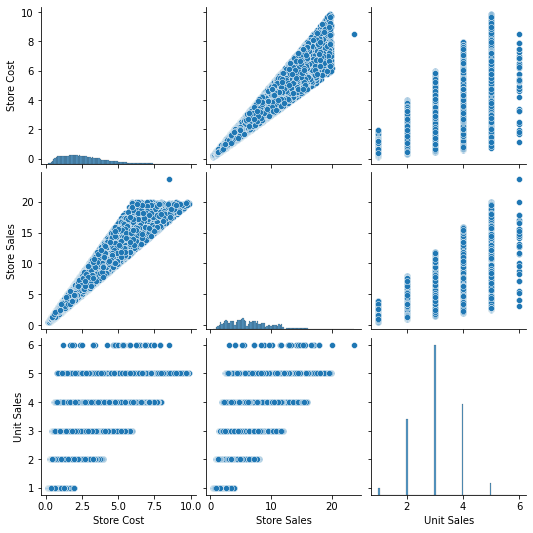

In this lab you are asked to cover the following points: 1. Data ingestion 2. Data understanding 3. Design and build a relational DWH 4. Query the DWH with Tableau (Desktop) 5. (Bonus) Plot the provenance graph
| Birthdate | Brand Name | C. City | C. Country | C. State | Category | Coffee Bar | Cost | Customer (Birthdate) | Customer (Card) | ... | Subcategory | Subcategory (Dep) | Subcategory (Family) | Type | Video Store | Yearly Income | Number of Records | Store Cost | Store Sales | Unit Sales | |
|---|---|---|---|---|---|---|---|---|---|---|---|---|---|---|---|---|---|---|---|---|---|
| 0 | 2/25/1954 | CDR | Walla Walla | USA | WA | Jams and Jellies | 0 | 0 | 3446 | 3446 | ... | Jam | Jam | Jam | Small Grocery | 0 | $30K - $50K | 1 | 3.0480 | 7.62 | 3 |
| 1 | 2/25/1954 | Landslide | Walla Walla | USA | WA | Jams and Jellies | 0 | 0 | 3446 | 3446 | ... | Peanut Butter | Peanut Butter | Peanut Butter | Small Grocery | 0 | $30K - $50K | 1 | 1.9740 | 4.20 | 3 |
| 2 | 2/25/1954 | Fort West | Walla Walla | USA | WA | Snack Foods | 0 | 0 | 3446 | 3446 | ... | Chips | Chips | Chips | Small Grocery | 0 | $30K - $50K | 1 | 5.2380 | 11.64 | 3 |
| 3 | 2/25/1954 | Horatio | Walla Walla | USA | WA | Snack Foods | 0 | 0 | 3446 | 3446 | ... | Dried Fruit | Dried Fruit | Dried Fruit | Small Grocery | 0 | $30K - $50K | 1 | 1.8744 | 5.68 | 2 |
| 4 | 2/25/1954 | Red Wing | Walla Walla | USA | WA | Paper Products | 0 | 0 | 3446 | 3446 | ... | Paper Wipes | Paper Wipes | Paper Wipes | Small Grocery | 0 | $30K - $50K | 1 | 1.7384 | 4.24 | 2 |
| ... | ... | ... | ... | ... | ... | ... | ... | ... | ... | ... | ... | ... | ... | ... | ... | ... | ... | ... | ... | ... | ... |
| 86832 | 6/19/1915 | Super | Downey | USA | CA | Jams and Jellies | 1 | 12820 | 5566 | 5566 | ... | Jelly | Jelly | Jelly | Gourmet Supermarket | 1 | $50K - $70K | 1 | 3.7152 | 7.74 | 3 |
| 86833 | 6/19/1915 | Booker | Downey | USA | CA | Dairy | 1 | 12820 | 5566 | 5566 | ... | Cheese | Cheese | Cheese | Gourmet Supermarket | 1 | $50K - $70K | 1 | 2.0535 | 5.55 | 3 |
| 86834 | 6/19/1915 | Club | Downey | USA | CA | Dairy | 1 | 12820 | 5566 | 5566 | ... | Cheese | Cheese | Cheese | Gourmet Supermarket | 1 | $50K - $70K | 1 | 5.9250 | 11.85 | 3 |
| 86835 | 6/19/1915 | Imagine | Downey | USA | CA | Frozen Desserts | 1 | 12820 | 5566 | 5566 | ... | Ice Cream | Ice Cream | Ice Cream | Gourmet Supermarket | 1 | $50K - $70K | 1 | 2.6322 | 6.42 | 2 |
| 86836 | 6/19/1915 | Choice | Downey | USA | CA | Candy | 1 | 12820 | 5566 | 5566 | ... | Chocolate Candy | Chocolate Candy | Chocolate Candy | Gourmet Supermarket | 1 | $50K - $70K | 1 | 2.1528 | 5.52 | 3 |
86837 rows × 56 columns
<class 'pandas.core.frame.DataFrame'>
RangeIndex: 86837 entries, 0 to 86836
Data columns (total 56 columns):
# Column Non-Null Count Dtype
--- ------ -------------- -----
0 Birthdate 86837 non-null object
1 Brand Name 86837 non-null object
2 C. City 86837 non-null object
3 C. Country 86837 non-null object
4 C. State 86837 non-null object
5 Category 86837 non-null object
6 Coffee Bar 86837 non-null int64
7 Cost 86837 non-null int64
8 Customer (Birthdate) 86837 non-null int64
9 Customer (Card) 86837 non-null int64
10 Customer (Education) 86837 non-null int64
11 Customer (Income) 86837 non-null int64
12 Customer (Location) 86837 non-null int64
13 Customer (Occupation) 86837 non-null int64
14 Customer (Sex) 86837 non-null int64
15 Customer (Status) 86837 non-null int64
16 Department 86837 non-null object
17 Education 86837 non-null object
18 End Date 23181 non-null object
19 Family 86837 non-null object
20 Florist 86837 non-null int64
21 Gender 86837 non-null object
22 Marital Status 86837 non-null object
23 Media Type 86837 non-null object
24 Member Card 86837 non-null object
25 Occupation 86837 non-null object
26 Product (Brand) 86837 non-null object
27 Product (Category) 86837 non-null object
28 Product (Department) 86837 non-null object
29 Product (Family) 86837 non-null object
30 Promotion (Cost) 86837 non-null int64
31 Promotion (End) 86837 non-null int64
32 Promotion (Media) 86837 non-null int64
33 Promotion (Start) 86837 non-null int64
34 S. City 86837 non-null object
35 S. Country 86837 non-null object
36 S. State 86837 non-null object
37 Salad Bar 86837 non-null int64
38 Sales Date 86837 non-null object
39 Start Date 23181 non-null object
40 Store 86837 non-null int64
41 Store (Coffee) 86837 non-null int64
42 Store (Florist) 86837 non-null int64
43 Store (Salad) 86837 non-null int64
44 Store (Type) 86837 non-null int64
45 Store (Video) 86837 non-null int64
46 Subcategory 86837 non-null object
47 Subcategory (Dep) 86837 non-null object
48 Subcategory (Family) 86837 non-null object
49 Type 86837 non-null object
50 Video Store 86837 non-null int64
51 Yearly Income 86837 non-null object
52 Number of Records 86837 non-null int64
53 Store Cost 86837 non-null float64
54 Store Sales 86837 non-null float64
55 Unit Sales 86837 non-null int64
dtypes: float64(2), int64(25), object(29)
memory usage: 37.1+ MB# select a subset of columns
columns = [
"C. City", "C. Country", "C. State", "Customer (Location)", "Yearly Income",
"Category", "Subcategory", "Family", "Product (Category)",
"S. City", "S. Country", "S. State", "Store", "Type",
"Sales Date"
]
df = df[columns + ["Store Cost", "Store Sales", "Unit Sales"]].groupby(columns).first().reset_index()| C. City | C. Country | C. State | Customer | Yearly Income | Category | Subcategory | Family | Product | S. City | S. Country | S. State | Store | Type | Sales Date | Store Cost | Store Sales | Unit Sales | |
|---|---|---|---|---|---|---|---|---|---|---|---|---|---|---|---|---|---|---|
| 0 | Albany | USA | OR | 117 | $90K - $110K | Baking Goods | Cooking Oil | Food | Super Corn Oil | Salem | USA | OR | 13 | Deluxe Supermarket | 1/21/1997 12:00:00 AM | 2.1177 | 5.43 | 3 |
| 1 | Albany | USA | OR | 117 | $90K - $110K | Baking Goods | Sauces | Food | Landslide Tomato Sauce | Salem | USA | OR | 13 | Deluxe Supermarket | 1/21/1997 12:00:00 AM | 1.6500 | 5.00 | 4 |
| 2 | Albany | USA | OR | 117 | $90K - $110K | Baking Goods | Sugar | Food | Landslide Brown Sugar | Salem | USA | OR | 13 | Deluxe Supermarket | 1/21/1997 12:00:00 AM | 5.3760 | 11.20 | 4 |
| 3 | Albany | USA | OR | 117 | $90K - $110K | Bathroom Products | Conditioner | Non-Consumable | Consolidated Silky Smooth Hair Conditioner | Salem | USA | OR | 13 | Deluxe Supermarket | 1/21/1997 12:00:00 AM | 1.1466 | 2.94 | 2 |
| 4 | Albany | USA | OR | 117 | $90K - $110K | Beer and Wine | Wine | Drink | Pearl Merlot Wine | Salem | USA | OR | 13 | Deluxe Supermarket | 1/21/1997 12:00:00 AM | 0.9288 | 2.16 | 4 |
| ... | ... | ... | ... | ... | ... | ... | ... | ... | ... | ... | ... | ... | ... | ... | ... | ... | ... | ... |
| 86824 | Yakima | USA | WA | 10226 | $10K - $30K | Jams and Jellies | Peanut Butter | Food | Plato Chunky Peanut Butter | Yakima | USA | WA | 23 | Mid-Size Grocery | 6/30/1997 12:00:00 AM | 1.9600 | 4.90 | 2 |
| 86825 | Yakima | USA | WA | 10226 | $10K - $30K | Meat | Hot Dogs | Food | Cutting Edge Chicken Hot Dogs | Yakima | USA | WA | 23 | Mid-Size Grocery | 6/30/1997 12:00:00 AM | 1.4229 | 4.59 | 3 |
| 86826 | Yakima | USA | WA | 10226 | $10K - $30K | Pizza | Pizza | Food | PigTail Frozen Pepperoni Pizza | Yakima | USA | WA | 23 | Mid-Size Grocery | 3/1/1997 12:00:00 AM | 1.0752 | 3.36 | 2 |
| 86827 | Yakima | USA | WA | 10226 | $10K - $30K | Vegetables | Fresh Vegetables | Food | Ebony Garlic | Yakima | USA | WA | 23 | Mid-Size Grocery | 2/11/1997 12:00:00 AM | 4.3680 | 10.40 | 4 |
| 86828 | Yakima | USA | WA | 10226 | $10K - $30K | Vegetables | Fresh Vegetables | Food | Hermanos Green Pepper | Yakima | USA | WA | 23 | Mid-Size Grocery | 2/11/1997 12:00:00 AM | 6.0216 | 15.44 | 4 |
86829 rows × 18 columns
append works?| C. City | C. Country | C. State | Customer | Yearly Income | Category | Subcategory | Family | Product | S. City | S. Country | S. State | Store | Type | Sales Date | Store Cost | Store Sales | Unit Sales | |
|---|---|---|---|---|---|---|---|---|---|---|---|---|---|---|---|---|---|---|
| 0 | Albany | USA | OR | 117 | $90K - $110K | Baking Goods | Cooking Oil | Food | Super Corn Oil | Salem | USA | OR | 13 | Deluxe Supermarket | 1/21/1997 12:00:00 AM | 2.1177 | 5.43 | 3 |
| 1 | Albany | USA | OR | 117 | $90K - $110K | Baking Goods | Sauces | Food | Landslide Tomato Sauce | Salem | USA | OR | 13 | Deluxe Supermarket | 1/21/1997 12:00:00 AM | 1.6500 | 5.00 | 4 |
| 2 | Albany | USA | OR | 117 | $90K - $110K | Baking Goods | Sugar | Food | Landslide Brown Sugar | Salem | USA | OR | 13 | Deluxe Supermarket | 1/21/1997 12:00:00 AM | 5.3760 | 11.20 | 4 |
| 3 | Albany | USA | OR | 117 | $90K - $110K | Bathroom Products | Conditioner | Non-Consumable | Consolidated Silky Smooth Hair Conditioner | Salem | USA | OR | 13 | Deluxe Supermarket | 1/21/1997 12:00:00 AM | 1.1466 | 2.94 | 2 |
| 4 | Albany | USA | OR | 117 | $90K - $110K | Beer and Wine | Wine | Drink | Pearl Merlot Wine | Salem | USA | OR | 13 | Deluxe Supermarket | 1/21/1997 12:00:00 AM | 0.9288 | 2.16 | 4 |
| ... | ... | ... | ... | ... | ... | ... | ... | ... | ... | ... | ... | ... | ... | ... | ... | ... | ... | ... |
| 86824 | Yakima | USA | WA | 10226 | $10K - $30K | Jams and Jellies | Peanut Butter | Food | Plato Chunky Peanut Butter | Yakima | USA | WA | 23 | Mid-Size Grocery | 6/30/1997 12:00:00 AM | 1.9600 | 4.90 | 2 |
| 86825 | Yakima | USA | WA | 10226 | $10K - $30K | Meat | Hot Dogs | Food | Cutting Edge Chicken Hot Dogs | Yakima | USA | WA | 23 | Mid-Size Grocery | 6/30/1997 12:00:00 AM | 1.4229 | 4.59 | 3 |
| 86826 | Yakima | USA | WA | 10226 | $10K - $30K | Pizza | Pizza | Food | PigTail Frozen Pepperoni Pizza | Yakima | USA | WA | 23 | Mid-Size Grocery | 3/1/1997 12:00:00 AM | 1.0752 | 3.36 | 2 |
| 86827 | Yakima | USA | WA | 10226 | $10K - $30K | Vegetables | Fresh Vegetables | Food | Ebony Garlic | Yakima | USA | WA | 23 | Mid-Size Grocery | 2/11/1997 12:00:00 AM | 4.3680 | 10.40 | 4 |
| 86828 | Yakima | USA | WA | 10226 | $10K - $30K | Vegetables | Fresh Vegetables | Food | Hermanos Green Pepper | Yakima | USA | WA | 23 | Mid-Size Grocery | 2/11/1997 12:00:00 AM | 6.0216 | 15.44 | 4 |
86829 rows × 18 columns
| C. City | C. Country | C. State | Customer | Yearly Income | Category | Subcategory | Family | Product | S. City | S. Country | S. State | Store | Type | Sales Date | Store Cost | Store Sales | Unit Sales | |
|---|---|---|---|---|---|---|---|---|---|---|---|---|---|---|---|---|---|---|
| 0 | Albany | USA | OR | 117 | $90K - $110K | Baking Goods | Cooking Oil | Food | Super Corn Oil | Salem | USA | OR | 13 | Deluxe Supermarket | 1/21/1997 12:00:00 AM | 2.1177 | 5.43 | 3 |
| 1 | Albany | USA | OR | 117 | $90K - $110K | Baking Goods | Sauces | Food | Landslide Tomato Sauce | Salem | USA | OR | 13 | Deluxe Supermarket | 1/21/1997 12:00:00 AM | 1.6500 | 5.00 | 4 |
| 2 | Albany | USA | OR | 117 | $90K - $110K | Baking Goods | Sugar | Food | Landslide Brown Sugar | Salem | USA | OR | 13 | Deluxe Supermarket | 1/21/1997 12:00:00 AM | 5.3760 | 11.20 | 4 |
| 3 | Albany | USA | OR | 117 | $90K - $110K | Bathroom Products | Conditioner | Non-Consumable | Consolidated Silky Smooth Hair Conditioner | Salem | USA | OR | 13 | Deluxe Supermarket | 1/21/1997 12:00:00 AM | 1.1466 | 2.94 | 2 |
| 4 | Albany | USA | OR | 117 | $90K - $110K | Beer and Wine | Wine | Drink | Pearl Merlot Wine | Salem | USA | OR | 13 | Deluxe Supermarket | 1/21/1997 12:00:00 AM | 0.9288 | 2.16 | 4 |
| ... | ... | ... | ... | ... | ... | ... | ... | ... | ... | ... | ... | ... | ... | ... | ... | ... | ... | ... |
| 86824 | Yakima | USA | WA | 10226 | $10K - $30K | Jams and Jellies | Peanut Butter | Food | Plato Chunky Peanut Butter | Yakima | USA | WA | 23 | Mid-Size Grocery | 6/30/1997 12:00:00 AM | 1.9600 | 4.90 | 2 |
| 86825 | Yakima | USA | WA | 10226 | $10K - $30K | Meat | Hot Dogs | Food | Cutting Edge Chicken Hot Dogs | Yakima | USA | WA | 23 | Mid-Size Grocery | 6/30/1997 12:00:00 AM | 1.4229 | 4.59 | 3 |
| 86826 | Yakima | USA | WA | 10226 | $10K - $30K | Pizza | Pizza | Food | PigTail Frozen Pepperoni Pizza | Yakima | USA | WA | 23 | Mid-Size Grocery | 3/1/1997 12:00:00 AM | 1.0752 | 3.36 | 2 |
| 86827 | Yakima | USA | WA | 10226 | $10K - $30K | Vegetables | Fresh Vegetables | Food | Ebony Garlic | Yakima | USA | WA | 23 | Mid-Size Grocery | 2/11/1997 12:00:00 AM | 4.3680 | 10.40 | 4 |
| 86828 | Yakima | USA | WA | 10226 | $10K - $30K | Vegetables | Fresh Vegetables | Food | Hermanos Green Pepper | Yakima | USA | WA | 23 | Mid-Size Grocery | 2/11/1997 12:00:00 AM | 6.0216 | 15.44 | 4 |
86829 rows × 18 columns
Save the processed dataset into S3
df.groupby([...]) + nunique()Store Cost, Store Sales, Unit Sales are candidate measures, the others are candidate levels<class 'pandas.core.frame.DataFrame'>
RangeIndex: 86829 entries, 0 to 86828
Data columns (total 18 columns):
# Column Non-Null Count Dtype
--- ------ -------------- -----
0 C. City 86829 non-null object
1 C. Country 86829 non-null object
2 C. State 86829 non-null object
3 Customer 86829 non-null int64
4 Yearly Income 86829 non-null object
5 Category 86829 non-null object
6 Subcategory 86829 non-null object
7 Family 86829 non-null object
8 Product 86829 non-null object
9 S. City 86829 non-null object
10 S. Country 86829 non-null object
11 S. State 86829 non-null object
12 Store 86829 non-null int64
13 Type 86829 non-null object
14 Sales Date 86829 non-null object
15 Store Cost 86829 non-null float64
16 Store Sales 86829 non-null float64
17 Unit Sales 86829 non-null int64
dtypes: float64(2), int64(3), object(13)
memory usage: 11.9+ MBHow many products have been sold?
Which functional dependencies hold among the levels?
What about Family?
| Subcategory | Category | Family | |
|---|---|---|---|
| Product | |||
| ADJ Rosy Sunglasses | 1 | 1 | 1 |
| Akron City Map | 1 | 1 | 1 |
| Akron Eyeglass Screwdriver | 1 | 1 | 1 |
| American Beef Bologna | 1 | 1 | 1 |
| American Chicken Hot Dogs | 1 | 1 | 1 |
| ... | ... | ... | ... |
| Washington Diet Cola | 1 | 1 | 1 |
| Washington Diet Soda | 1 | 1 | 1 |
| Washington Mango Drink | 1 | 1 | 1 |
| Washington Orange Juice | 1 | 1 | 1 |
| Washington Strawberry Drink | 1 | 1 | 1 |
1559 rows × 3 columns
Category
Baking Goods 1
Bathroom Products 1
Beer and Wine 1
Bread 1
Breakfast Foods 1
Candles 1
Candy 1
Canned Anchovies 1
Canned Clams 1
Canned Oysters 1
Canned Sardines 1
Canned Shrimp 1
Canned Soup 1
Canned Tuna 1
Carbonated Beverages 1
Cleaning Supplies 1
Cold Remedies 1
Dairy 2
Decongestants 1
Drinks 1
Eggs 1
Electrical 1
Frozen Desserts 1
Frozen Entrees 1
Fruit 1
Hardware 1
Hot Beverages 1
Hygiene 1
Jams and Jellies 1
Kitchen Products 1
Magazines 1
Meat 1
Miscellaneous 1
Packaged Vegetables 1
Pain Relievers 1
Paper Products 1
Pizza 1
Plastic Products 1
Pure Juice Beverages 1
Seafood 1
Side Dishes 1
Snack Foods 1
Specialty 2
Starchy Foods 1
Vegetables 1
Name: Family, dtype: int64Are there relationships between measures?
Doing some ETL
Sales Date as a Datetime attribute both in the fact and dimension tablessum of Store Sales for each S. State
S. City level.
Stores) are there in each S. State? What about in each S. City?
COUNTD aggregation. Why?S. City level (as done above) and associate the color property with the number of distinct stores (COUNTD(store))S. Type field with the color property.
SUM) for each S. Type.
Store) with the color property and the label property
S. State (one axis for each state)
State?Edit Axis > Select Independent axis...Familys have on total sales while maintaining the monthly trend visualization
Matteo Francia - Big Data and Cloud Platforms (Module 2) - A.Y. 2024/25